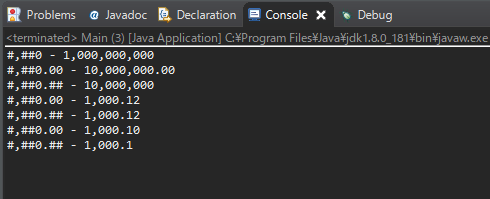
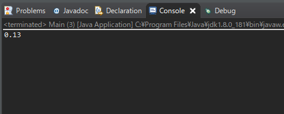
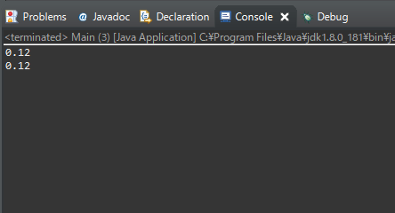

[Java] 数字フォーマット(お金表示及び小数点以下表示)
こんにちは。明月です。
この投稿はJavaで数字フォーマット(お金表示及び小数点以下表示)に関する説明です。
プログラム内で数字を扱う時にお金表示、つまり千単位でコンマがある表示を設定することが必要な時があります。
お金の場合は「0」が多い数字値だし、コンマ(,)表示がなければ迷う単位が多いからよく使うフォーマット変換だと思います。
Javaは「int」や「double」、「float」タイプを「String」タイプに変換する時には「DecimalFormat」クラスを利用します。
import java.text.DecimalFormat;
public class Main {
// 実行関数
public static void main(String[] args) {
// お金表示 (3桁ずつ「,」を表示する。)
DecimalFormat formatter = new DecimalFormat("#,##0");
// intタイプ
int data = 1000000000;
// intタイプからStringタイプにフォーマットによって変換
String ret = formatter.format(data);
// コンソール出力
System.out.print("#,##0 - ");
// 結果は1,000,000,000
System.out.println(ret);
// 小数点以下2桁まで表示(小数点以下がない場合、0.00で表示する。)
DecimalFormat formatter2 = new DecimalFormat("#,##0.00");
// doubleタイプ
double data2 = 10000000d;
// doubleタイプからStringタイプにフォーマットによって変換
ret = formatter2.format(data2);
// コンソール出力
System.out.print("#,##0.00 - ");
// 結果は10,000,000.00 (小数点以下が表示する。)
System.out.println(ret);
// 小数点以下2桁まで表示(小数点以下がない場合には表示しない。)
DecimalFormat formatter3 = new DecimalFormat("#,##0.##");
// doubleタイプからStringタイプにフォーマットによって変換
ret = formatter3.format(data2);
// コンソール出力
System.out.print("#,##0.## - ");
// 結果は1,000,000,000 (小数点以下が表示しない。)
System.out.println(ret);
// doubleタイプ
double data3 = 1000.123d;
// doubleタイプからStringタイプにフォーマットによって変換
ret = formatter2.format(data3);
// コンソール出力
System.out.print("#,##0.00 - ");
// 結果は1,000.12
System.out.println(ret);
// doubleタイプからStringタイプにフォーマットによって変換
ret = formatter3.format(data3);
// コンソール出力
System.out.print("#,##0.## - ");
// 結果は1,000.12
System.out.println(ret);
// doubleタイプ
double data4 = 1000.1d;
// doubleタイプからStringタイプにフォーマットによって変換
ret = formatter2.format(data4);
// コンソール出力
System.out.print("#,##0.00 - ");
// 結果は1,000.10 (小数点以下が１桁だけとフォーマットが2桁までなければ0なので表示する。)
System.out.println(ret);
// doubleタイプからStringタイプにフォーメットによって変換する。
ret = formatter3.format(data4);
// コンソール出力
System.out.print("#,##0.## - ");
// 結果は1,000.10
System.out.println(ret);
}
}

上の例で「#」はあれば表示するし、なければ表示しないことだし、「0」はなかったらデフォルトで「0」を表示するということでフォーマット設定になります。
そうすれば、上は小数点2桁までの設定でしだが、3桁になるとどうなるでしょうか？
public class Main {
public static void main(String[] args) {
// フォーマット設定
DecimalFormat formatter = new DecimalFormat("#,##0.##");
// doubleタイプで小数点3桁設定
double data2 = 0.127d;
// doubleタイプからStringタイプにフォーマットによって変換する。
String ret = formatter.format(data2);
// コンソール出力
System.out.println(ret);
}
}

四捨五入になって「0.127」から「0.13」になりました。
でも、状況によって四捨五入じゃなく、切り捨てする時もあります。その時にはフォーマットだけじゃなく、Mathクラスを利用して計算するか、BigDecimalタイプに変換して切り捨て関数で計算するかの方法があります。
import java.math.BigDecimal;
import java.text.DecimalFormat;
public class Main {
public static void main(String[] args) {
// フォーマット設定
DecimalFormat formatter = new DecimalFormat("#,##0.##");
// doubleタイプで小数点3桁設定
double data = 0.127d;
// データを100を乗算して小数点以下を切り捨てする。
// そのデータからまた100を割算する。
double data2 = Math.floor(data * 100) / 100;
// doubleタイプからStringタイプにフォーマットによって変換
String ret = formatter.format(data2);
// コンソール出力
System.out.println(ret);
// doubleタイプをBigDecimalタイプに変換する。
BigDecimal data3 = new BigDecimal(data);
// 小数点2桁まで切り捨てする。
data3 = data3.setScale(2, BigDecimal.ROUND_DOWN);
// BigDecimalタイプからStringタイプにフォーマットによって変換
ret = formatter.format(data3);
// コンソール出力
System.out.println(ret);
}
}

個人的にBigDecimalを使うとメモリ使用がありますが、Math.floorの場合はoverflowエラー可能性があるので、BigDecimalタイプに変換して切り捨てする方が良いと思います。
ここまでJavaで数字フォーマット(お金表示及び小数点以下表示)に関する説明でした。
ご不明なところや間違いところがあればコメントしてください。
「Devlopment note / Java」の他投稿
- [Java] 日付フォーマット(SimpleDateFormat)を使う方法2020/03/25 00:36:53
- [Java] サーブレット(Servlet)の環境でファイルアップロード(プログレスバーでファイルアップロード状態を表示する方法)する方法2020/03/24 00:48:21
- [Java] Spring環境でファイルアップロード(プログレスバーでファイルアップロード状態を表示する方法)する方法2020/03/22 23:15:12
- [Java] FTPに接続してファイルをダウンロード、アップロードする方法(FTPClient)2020/03/20 02:44:36
- [Java] JSPのSpring環境でschedulerのcronを使う方法2020/03/18 00:24:32
- [Java] POIを利用してExcelを扱う方法2020/03/17 01:48:00
- [Java] PDFを出力する方法(itextpdf)2020/03/13 00:47:31
- [Java] ログライブラリ(log4j)を使う方法2020/03/12 00:54:39
- [Java] Jsonタイプのデータを使う方法(Gsonライブラリ)2020/03/11 00:30:15
- [Java] Base64をエンコード、デコードする方法2020/03/09 10:24:01
- [Java] cmdコマンドを実行するための方法2020/03/06 18:01:10
- [Java] メール(javax.mail)を発送する方法2020/03/05 20:07:49
- [Java] クラス複製(Clonable, Reflection)2020/03/05 00:03:19
- [Java] シリアライズ(直列化: Serializable)2020/03/03 00:03:33
- [Java] StringBuilderとStringBufferの差異2020/03/02 07:52:22
最新投稿
- [C#] ログライブラリ(log4net)を設定する方法2020/04/08 13:04:22
- [C#] Zipの圧縮ファイルを解凍するコードを作成する方法2020/04/07 11:17:44
- [C#] Zip圧縮コードを作成する方法2020/04/06 14:56:13
- [C#] 数字フォーマット(お金表示及び小数点以下表示)2020/04/03 00:38:37
- [C#] コマンド(cmd)を実行する方法(Processクラス)2020/03/31 07:15:40
- [C#] FTPに接続してファイルダウンロード、アップロードする方法2020/03/27 19:20:14
- [C#] HttpWebRequestを利用してウェブページを読み込みする方法2020/03/27 00:23:19
- [C#] Base64のエンコード、デコードする方法2020/03/26 02:19:50
- [Java] 日付フォーマット(SimpleDateFormat)を使う方法2020/03/25 00:36:53
- [Java] サーブレット(Servlet)の環境でファイルアップロード(プログレスバーでファイルアップロード状態を表示する方法)する方法2020/03/24 00:48:21
- [Java] Spring環境でファイルアップロード(プログレスバーでファイルアップロード状態を表示する方法)する方法2020/03/22 23:15:12
- [Java] FTPに接続してファイルをダウンロード、アップロードする方法(FTPClient)2020/03/20 02:44:36
- [Window] WindowでFTPサーバを構築する方法2020/03/19 03:27:22
- [Java] JSPのSpring環境でschedulerのcronを使う方法2020/03/18 00:24:32
- [Java] POIを利用してExcelを扱う方法2020/03/17 01:48:00